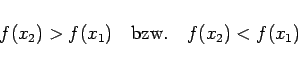
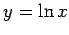

Inhalt Index DeskTop Bronstein

 Funktionen und ihre Darstellung Funktionsbegriff Einige Funktionstypen
Funktionen und ihre Darstellung Funktionsbegriff Einige Funktionstypen


Genügt eine Funktion im Definitionsbereich für beliebige Argumente x1 und x2 mit x2 > x1 der Bedingung
dann wird sie monoton wachsende Funktion bzw. monoton fallende Funktion genannt. Wenn eine der Bedingungen (2.7a) nicht für alle x-Werte erfüllt ist, die dem Definitionsbereich angehören, sondern lediglich in einem Teil desselben, z.B. in einem Intervall oder auf einer Halbachse, dann nennt man die Funktion monoton in diesem Gebiet.
Funktionen, die der Bedingung
|  | (2.7b) |
genügen, d.h., das Gleichheitszeichen in (2.7a) ist nicht zugelassen, nennt man eigentlich oder streng monoton wachsend bzw. fallend.
In der ersten der beiden Abbildungen ist eine eigentlich monoton wachsende Funktion dargestellt, in der zweiten eine monoton fallende Funktion, die zwischen x1 und x2 konstant ist.
| Beispiel |
|
y=e-x ist streng monoton fallend,  ist streng monoton wachsend. |